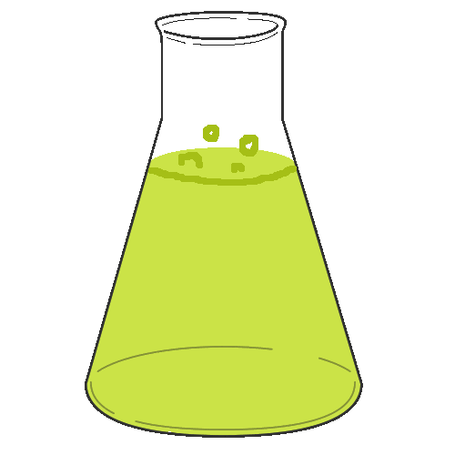

Buffer Systems and Explore an Issue in Acids and Bases
Callout
What is a Buffer?

A buffer is a solution that can resist pH change upon the addition of acidic or basic components. It is able to neutralize small amounts of added acid or base, thus maintaining the pH of the solution relatively stable.
Callout
Characteristics of a Buffer
A buffer keeps the pH of a solution within a certain narrow range. When an acid or base is added to this solution, the buffer prevents the pH from changing.
7.png)
Buffers always contain a mixture of a weak acid (or base) and its conjugate ion in solution.
Acidic Buffers
Acid buffer has acidic pH and is prepared by mixing a weak acid and its salt with a strong base. An aqueous solution of an equal concentration of acetic acid and sodium acetate has a pH of 4.74.
Buffers and Equilibria
When solving problems involving the addition of a strong acid or base to a buffer, deal first with the stoichiometry of the resulting reaction. A strong acid will dissociate completely and react with the chemical entities present in the solution. After the stoichiometric calculations are completed, then consider the equilibrium calculations.
4.png)
Additives in the Food and Beverage Industry
- Acids and bases are artificial flavoring agents, and buffers stabilize the pH of food and beverage products.
- These substances may also be used to help thicken foods and beverages, maintain color, and deter bacterial growth.
The Issue
- The media have been reporting that chemical additives are not safe.
- Some are calling for stricter government regulations.
- The food industry argues that our food supply is highly regulated and safe.
- They also say that the inclusion of additives such as acids, bases, and buffers enhances taste and reduces spoilage.
3.png)
Consuming small amounts of additives may be safe, but the health risks add up if you rely heavily on processed foods. A diet rich in processed foods is linked to chronic diseases such as obesity, high blood pressure, heart disease, and cancer.